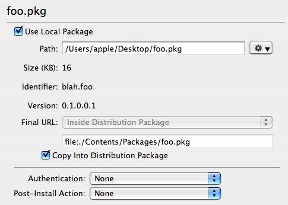
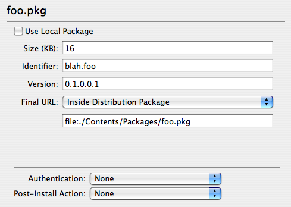

Specifying the Contents
After specifying the choices interface for a distribution, the package references associated with each choice must be specified. A package reference may be a local package, meaning that it exists on disk already, but may also be a package that does not exist, or exists only on external media, etc.
A local package can be added to a choice by dragging it from the Finder to the choice in the PackageMaker user interface or by using the Project > Add Package… menu item. A general package reference may be added via the Project > Add Package Reference… menu item. The properties of a package reference can be edited by selecting the package in the “Distribution Details” sidebar in the PackageMaker user interface.
 Editing a local package referenceFor local packages, PackageMaker will extract the size, identifier, and version number from the package for you. For general package references, this information must be provided by the package author. As always, the identifier for each package should be unique.
 Editing a general package referenceAs in metapackages, the packages within a distribution can be stored in several places. In addition, within a distribution, each package can be in a different place from other packages within the distribution.
- Inside Distribution Package: Package is stored in the
Contents/Packagesdirectory within the distribution .mpkg. - Same Level as Distribution Package: Package is stored in the same directory as the distribution .mpkg.
- Removable Media: Package is stored on removable media, which may be part of a multi-disc install.
- Custom: Package is stored at some arbitrary location.
Finally, each package should have a specified authentication and post-install action. While this information is available in the package Info.plist, it is also put into the distribution so that Installer.app does not have to dig into packages to figure these properties out. These should be greater-than-or-equal-to what is specified in the package. That is, if a package requires Admin authentication, it should be set to Admin or Root in the distribution.